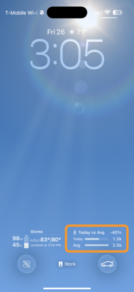
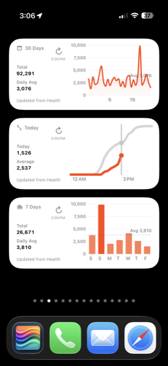
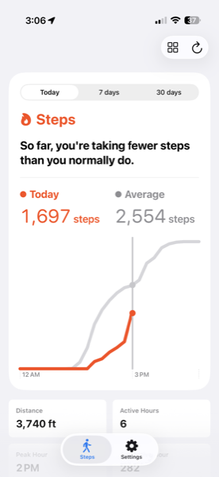
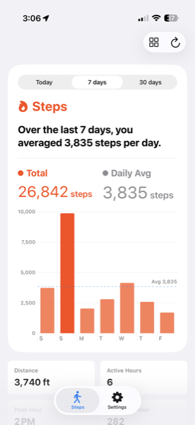
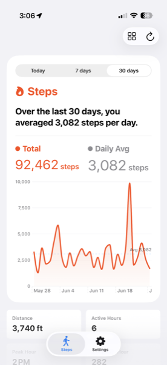

Your steps,
beautifully visualized.
WalkingMonitor reads your walking data from Apple Health and turns it into clear, insightful charts — with Home Screen widgets to keep your progress at a glance.
WalkingMonitor reads your walking data from Apple Health and turns it into clear, insightful charts — with Home Screen widgets to keep your progress at a glance.

Today — hourly breakdown

7-day bar chart history

30-day trend line

Settings

Widget setup guide
WalkingMonitor reads your step count and walking distance directly from Apple Health. Grant permission once and you're done — no accounts, no manual entry, no syncing.
Toggle between today's hourly breakdown, a 7-day bar chart, or a 30-day trend line. See your total steps, daily average, and how you compare to your typical activity level.
Keep your progress visible without opening the app. Choose from Today, 7-day, and 30-day widgets — each sized to fit your Home Screen layout.
All data stays on your device. WalkingMonitor reads from HealthKit locally — nothing is collected, stored externally, or shared with anyone. Read our privacy policy →
WalkingMonitor uses Apple HealthKit to read your step data directly on your iPhone. No account to create, no server to sync to, no analytics tracking. What happens on your device stays on your device.
Read the full Privacy PolicyWalkingMonitor is free to download. No subscriptions, no accounts.